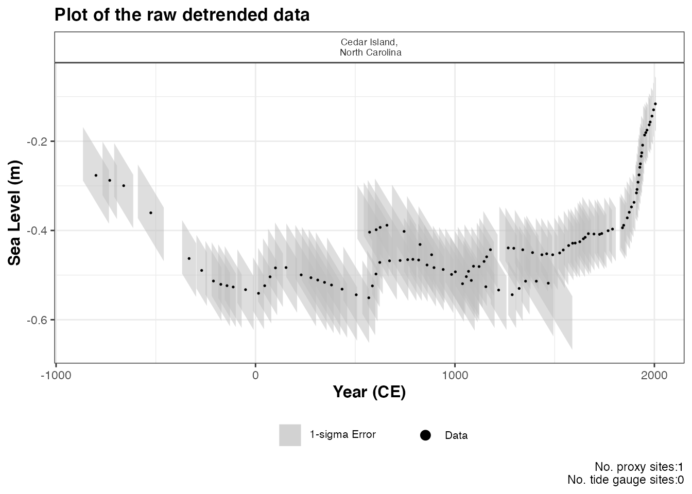
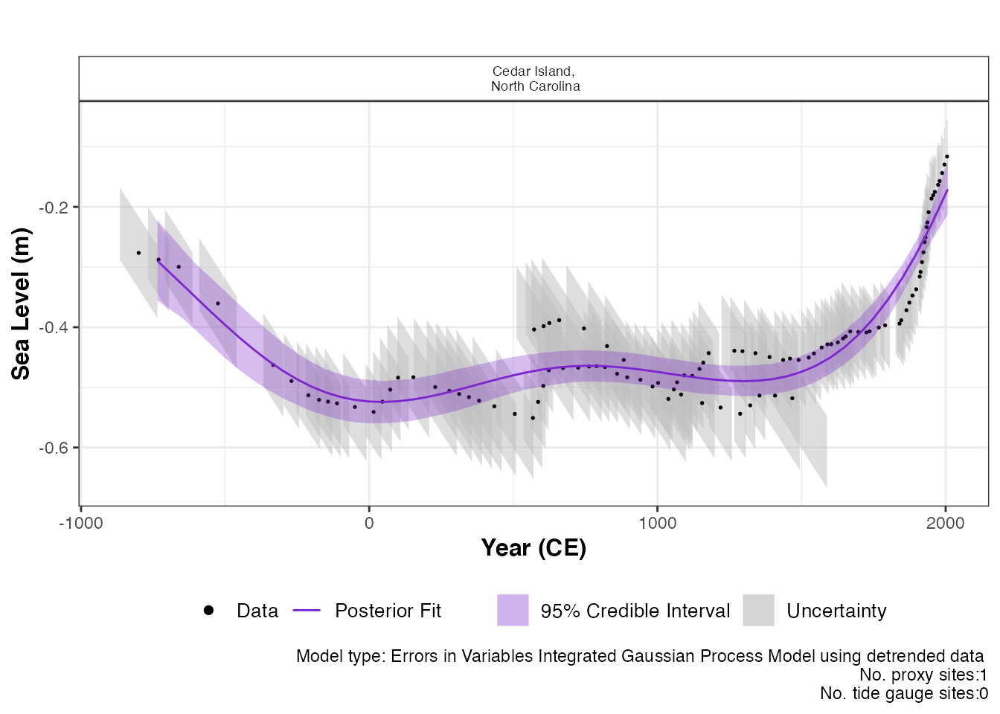
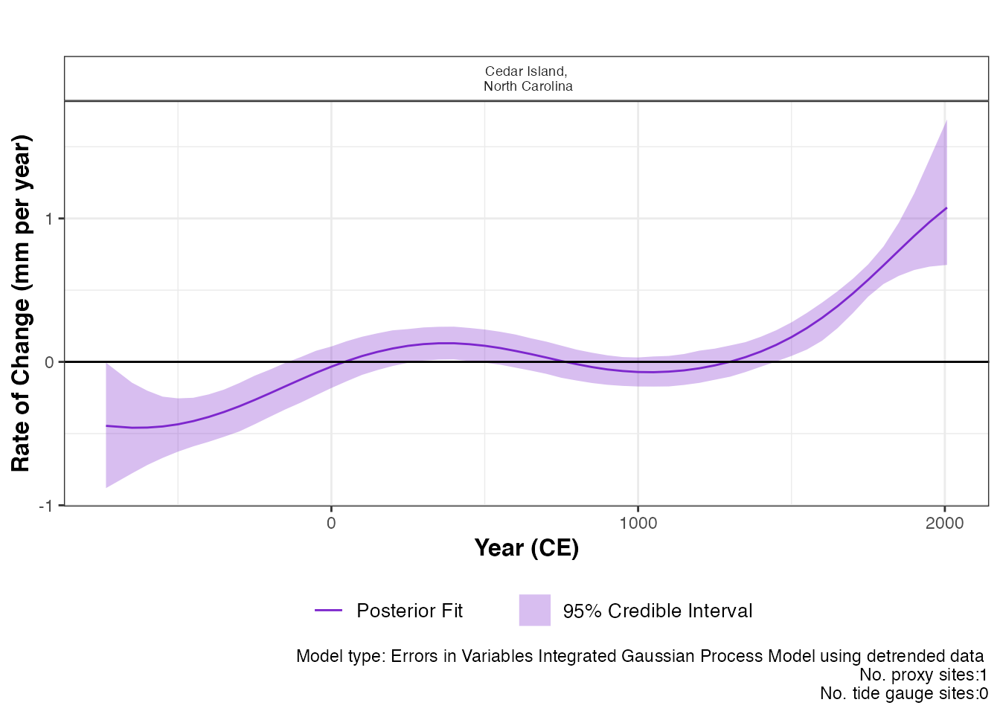
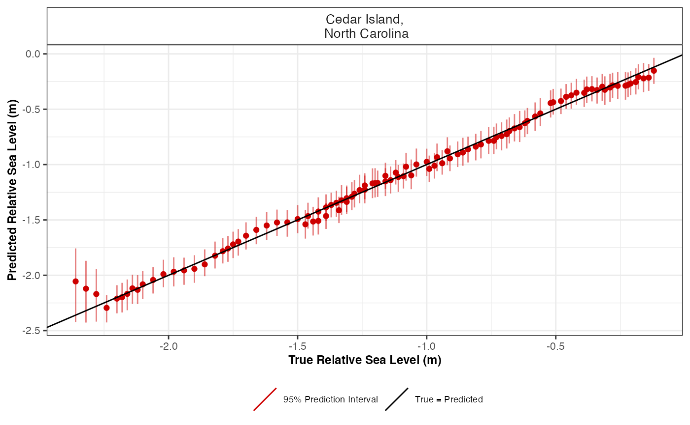

vignettes/advanced_reslr.Rmd
advanced_reslr.RmdIn this document we present a range of advanced options that are
available in the reslr package. To examine the all other options in the
reslr package, see the main vignette.
If you have created other examples demonstrating reslr
capabilities yourself, please contact me so I
can include them here for other people to see.
Installing reslr and loading it with:
The EIV Integrated Gaussian Process model provides the underlying
rate of the process directly from the model. If the user requires a
model applied to data that has been de-trended this is available in our
package for a single site using the
model_type = "eiv_igp_t". The data is de-trended using the
linear rate which can be provided by the user within the input dataframe
along with the uncertainty associated with the rate. Or the linear rate
is calculated within the package using the data and this rate is used to
de-trend the data. In addition, the user will need to provide the
estimated year of core collection.
This technique focuses on 1 site and we do not recommended for
multiple proxy sites together. Tide gauge data can be included, however,
the user must investigate which tide gauge is suitable and the tide
gauge data will use the same linear_rate as the proxy records. As an
example, we will filter the example dataset NAACproxydata
to select one site to demonstrate the process:
# For 1 site
CedarIslandNC <- NAACproxydata[NAACproxydata$Site == "Cedar Island",]Step 1: Load in the data using the
reslr_load function:
CedarIslandNC_input_detrend <- reslr_load(
data = CedarIslandNC,
include_tide_gauge = FALSE,
include_linear_rate = TRUE,
TG_minimum_dist_proxy = FALSE,
list_preferred_TGs = NULL,
all_TG_1deg = FALSE,
prediction_grid_res = 50,
sediment_average_TG = 10,
detrend_data = TRUE,
core_col_year = 2010
)For this case, we update the setting detrend_data = TRUE
and we provide the core_col_year = 2010 corresponding to
the year of the core collection. The linear_rate is required and is
included by setting include_linear_rate = TRUE.
The output of this function is a list of two dataframes called
data and data_grid. - The data
dataframe is the inputted data with additional columns for the
data_type_id which will contain “ProxyRecord”. It can be accessed
by:
data <- CedarIslandNC_input_detrend$datadata_grid is a dataframe that is evenly spaced in
time based on the prediction_grid_res value chosen by the
user and is used to create the plots and is accessed by
data_grid <- CedarIslandNC_input_detrend$data_gridStep 1a: A brief insight into the outputs of the
reslr_input function can be obtained using:
print(CedarIslandNC_input_detrend)
#> This is a valid reslr input object with 104 observations and 1 site(s).
#> There are 1 proxy site(s) and 0 tide gauge site(s).
#> The age units are; Common Era.
#> Decadally averaged tide gauge data was not included. It is recommended for the ni_gam_decomp model
#> The linear_rate and linear_rate_err has been included.
#> Data has been detrended.Step 2: Plotting the data the raw data with:
plot(
x = CedarIslandNC_input_detrend,
title = "Plot of the raw detrended data",
xlab = "Year (CE)",
ylab = "Sea Level (m)",
plot_proxy_records = TRUE,
plot_tide_gauges = FALSE
)
This will produce a plot of Age on the x-axis and Sea Level on the
y-axis in meters. Grey boxes represent the uncertainty associated with
the vertical and horizontal uncertainty. The black data points are the
midpoints of these uncertainty boxes. The extra arguments can be used
which allows the user to updated the titles and axis labels. The caption
plot_caption, included by default, provides the number of
proxy sites and tide gauge sites that will be used in the model and can
be removed if required plot_caption = FALSE. In addition,
the user can select to plot the additional tide gauge data,
plot_tide_gauge = TRUE.
Step 3: To run the eiv_igp_t model the following function should be used:
res_eiv_igp_t_detrend <- reslr_mcmc(
input_data = CedarIslandNC_input_detrend,
model_type = "eiv_igp_t",
CI = 0.95
)This command takes the input data and the user specifies the
statistical model, i.e. an integrated Gaussian process using the EIV
uncertainty method (“eiv_igp_t”). It tells reslr to store
the output of the model run in an object called
res_eiv_igp_t. The CI setting allows the user
to set the credible intervals, the current default is
CI = 0.95.
Step 3a: A brief insight into the outputs of the
reslr_output function can be obtained using:
print(res_eiv_igp_t_detrend)
#> This is a valid reslr output object with 104 observations and 1 site(s).
#> There are 1 proxy site(s) and 0 tide gauge site(s).
#> The age units are; Common Era.
#> Model has used detrended data.
#> The model used was the Errors-in-Variables Integrated Gaussian Process model in time for detrended data.
#> The input data has been run via reslr_mcmc and has produced 3000 iterations over 3 MCMC chains.Step 4: The convergence of the algorithm is examined and he parameter estimates from the model can be investigated using the following:
summary(res_eiv_igp_t_detrend)
#> No convergence issues detected.
#> # A tibble: 3 × 7
#> variable mean sd mad q5 q95 rhat
#> <chr> <num> <num> <num> <num> <num> <num>
#> 1 nu 0.819 0.405 0.304 0.378 1.60 1.00
#> 2 rho 0.229 0.114 0.118 0.0608 0.434 1.00
#> 3 sigma_y 0.00624 0.00482 0.00459 0.000498 0.0155 1.00If the model run has the package will print: “No convergence issues
detected”. If the package prints: “Convergence issues detected, a longer
run is necessary”. The user is required to update the
reslr_mcmc function with additional iterations in the
following manner:
res_eiv_igp_t_detrend <- reslr_mcmc(
input_data = CedarIslandNC_input_detrend,
model_type = "eiv_igp_t",
# Update these values
n_iterations = 6000, # Number of iterations
n_burnin = 1000, # Number of iterations to discard at the beginning
n_thin = 4, # Reduces number of output samples to save memory and computation time
n_chains = 3 # Number of Markov chains
)For the parameter estimates, the length scale parameter, “rho” is the correlation parameter and “nu” is the standard deviation of the rate process. “sigma_y” is the variation of the model.
Step 5: The results from the EIV IGP model for the de-trended data can be illustrated using:
plot(res_eiv_igp_t_detrend,
plot_type = "model_fit_plot",
xlab = "Year (CE)",
ylab = "Sea Level (m)",
plot_proxy_records = TRUE,
plot_tide_gauges = FALSE
)
The output of this function is a graph of the input data, i.e. Age
and SL and associated uncertainty boxes, and the model fit with 95 %
credible interval. The caption provides the model type used and number
of proxy sites and tide gauge sites used and can be removed if necessary
with plot_caption = FALSE. In order to view the rate of
change plot, the following setting should be used:
plot(res_eiv_igp_t_detrend,
plot_type = "rate_plot",
xlab = "Year (CE)",
y_rate_lab = "Rate of Change (mm per year)"
)
This prints the plot of the rate of change with 95 % credible intervals. The caption provides the model type, the number of proxy sites and tide gauge sites that were used.
To examine the data creating these plots the user types the following:
output_dataframes <- res_eiv_igp_t_detrend$output_dataframesThe default input age for the reslr package is in units of years in
the Common Era. The user can select to input the age value in Before
Present by updating the input_age_type = "BP" within the
reslr_load function. Inside the package, the Age is
converted into CE in order to run the models. The plots are then altered
to account for the input age in BP and the x-axis is be reversed.
Load in the data using the reslr_load function:
CedarIslandNC_input_age_BP <- reslr_load(
data = data_age_bp,
input_age_type = "BP"
)The output of this function is a list of two dataframes called
data and data_grid. Both dataframes will
contain two new columns which identify the Age_type = "BP"
and an additional column is included called Age_BP which
contains the original input Age in units Before Present.If the user is
recreating these plots, they are required to use the Age_BP
column along the x-axis as it provides the original input age in units
Before Present (BP) and the x-axis will need to be reversed.
In this package, we have described three ways to select a tide gauge and in the example we showed how to include the closest tide gauge to the proxy site. Here we are demonstrating the other options available to the user.
If the user has a list of chosen tide gauges from PSMSL website,
include them in a list in the reslr_load function as
demonstrated:
multi_site <- reslr_load(
data = multi_site,
include_tide_gauge = TRUE,
include_linear_rate = TRUE,
TG_minimum_dist_proxy = FALSE,
# There is no limit to the number of tide gauges provided in the list
list_preferred_TGs = c(
"ARGENTIA", "MAYPORT",
"JACKSONVILLE", "LAKE WORTH PIER",
"MAYPORT (BAR PILOTS DOCK), FLORIDA"
),
all_TG_1deg = FALSE,
prediction_grid_res = 50,
sediment_average_TG = 10
)Here is how to plot this example:
plot(
x = multi_site,
title = "Plot of the raw data",
xlab = "Year (CE)",
ylab = "Relative Sea Level (m)",
plot_tide_gauges = TRUE,
plot_proxy_records = TRUE,
plot_caption = TRUE
)If the user requires all tide gauges within 1 degree of the proxy
site, which is the equivalent of 111kms, this can be done by updating
all_TG_1deg=TRUE in the following way:
multi_site <- reslr_load(
data = multi_site,
include_tide_gauge = TRUE,
include_linear_rate = TRUE,
TG_minimum_dist_proxy = FALSE,
list_preferred_TGs = NULL,
all_TG_1deg = TRUE,
prediction_grid_res = 50
)Here is how to plot this example:
plot(
x = multi_site,
title = "Plot of the raw data",
xlab = "Year (CE)",
ylab = "Relative Sea Level (m)",
plot_tide_gauges = TRUE,
plot_proxy_records = TRUE,
plot_caption = TRUE
)In the package, all plot labels for results, i.e. x and y labels and titles, can be updated in the following manner:
# Example
final_plots <- plot(x = reslr_mcmc(CedarIslandNC, model_type = "ni_spline_t"))
final_plots$plot_result
# Adding new title to the total model fit plot
final_plots$plot_result + ggplot2::ggtitle("New Title Added as Example")
final_plots$plot_result + ggplot2::xlab("New x axis label Added as Example")
final_plots$plot_result + ggplot2::ylab("New y axis label Added as Example")The user can access the dataframes creating these plots in order to recreate the output plots in their own style. To access the data frame used to create the raw plot use:
data <- CedarIslandNC_input_detrend$dataTo access the dataframe creating the output model fit plot use:
data <- res_eiv_igp_t_detrend$output_dataframesThis dataframes contains the model fit under the column
pred and the rate of change column is
rate_pred.
For the ni_gam_decomp model, there are a separate
dataframe for each component and the rate of change for each component
has a corresponding dataframe. This ensures the decomposition of the RSL
signal can be plotted with all four components together, using separate
colours to identify the different drivers of RSL change.
In the package the user has the ability access all the posterior sample for each unknown parameter in the following way:
# Example
CedarIslandNC_input <- reslr_load(
data = CedarIslandNC)
res_eiv_slr_t <-
reslr_mcmc(CedarIslandNC_input,
model_type = "eiv_slr_t")
# Accessing the slope of the EIV simple linear regression
beta <- res_eiv_slr_t$noisy_model_run_output$BUGSoutput$sims.list$betaWhen constructing a spline piecewise polynomials join together at
knots to form smooth curves. The number of knots for these models can be
reduced to achieve a more smooth model fit or increased for more
flexibility. In the reslr package, tests have been carried
out to select the correct number of knots for the spline in time, spline
in space time and the GAM. However, if the situation arise where the
model fits require additional flexibility or require additional
smoothing, the user can adjust these settings. To adjust the setting for
the number of knots in the spline in time update the reslr function in
the following way:
res_ni_sp_t <-
reslr_mcmc(CedarIslandNC_input,
model_type = "ni_spline_t",
spline_nseg = NULL)By updating the spline_nseg function, the number of
knots we change. Note the minimum value for this setting is 2. The
default for this setting is NULL as we use a rule of thumb
calculation to identify the number of knots based on the range of
observations. Similarly, for the spline in space time. The number of
knots is updated using:
res_ni_sp_t <-
reslr_mcmc(CedarIslandNC_input,
model_type = "ni_spline_st",
spline_nseg = NULL)By updating the spline_nseg function, the number of
knots we change. Note the minimum value for this setting is 2. The
default for this setting is NULL as we use a rule of thumb
calculation to identify the number of knots based on the range of
observations.
When using the NI GAM approach, the number of knots for the separate
components can be altered. To control the smoothness of the regional
component (i.e. spline in time) the setting to vary is the
spline_nseg_t. To vary the non-linear local component
(i.e. spline in space time), the user can vary the
spline_nseg_st setting. The following example will
demonstrate these settings:
res_ni_sp_t <-
reslr_mcmc(CedarIslandNC_input,
model_type = "ni_gam_decomp",
spline_nseg_t = 20,
spline_nseg_st = 6)The default settings have been tested using cross validation techniques to incorporate the require flexibility for both components.
In the previous section, we discussed altering the smoothness of the splines by varying the number of knots in the model. The user can test the validity of the model and the number of knots selected using this cross validation function with in the package. For example, the user can run different values for the knots and compare the model fits for each setting using the following cross validation function.
data1site_example <- NAACproxydata[NAACproxydata$Site == "Cedar Island",]
# Cross Validation test
cv <- cross_val_check(data = data1site_example,
model_type ="ni_spline_t",
n_iterations = 1000,
n_burnin = 100,
n_thin = 5,
n_chains = 2,
spline_nseg = NULL,# User the package to calculate the number of knots
# n_fold allows the user to alter the cross validation, i.e. 3, 5, 10 fold
n_fold = 3,
#To reproducible results,seed stores the output of the random selection
seed = NULL,
CI = 0.95)# Size of the credible intervals and prediction intervalsTo alter the number of knots in the model, include the
spline_nseg or spline_nseg_t or
spline_nseg_st arguments in this function. The different
meanings for these arguments are described in the section above. By
altering the CI argument, the user can change the size of
the prediction intervals.
The n_fold = 3 argument allows the user to change the
number of folds used in the cross validation test. We recommend a
minimum of 3 folds and the ideal number of folds is 5 or 10, however,
using 10 folds will result in longer run times.
By updating the model_type argument, the user can
undertake cross validation for the noisy input spline in time, the noisy
input spline in space time or the noisy input generalised additive
model. This function will print a statement regarding model convergence.
If the convergence issues are detected, the package will inform the user
to increase the number of iterations in the cross_val_check
function.
The outputs of the cross_val_check function are stored
as a list. To examine the true versus predicted plot use the following
command.
cv$true_pred_plot
This figure presents the true RSL value in metres versus the predicted RSL value in metres for each data site. The predicted means are the red dots and the vertical lines over each point are the prediction intervals.
To access the dataframe creating this plot use:
CV_model_df <- cv$CV_model_dfThis dataframe contains the true_RSL values from the
test set and the corresponding predicted values pred_RSL.
In this dataframe, there are the prediction intervals
upr_PI and lwr_PI. The SiteName
column identifies each site present in the dataframe and allows for site
specific analysis of the model if required.
The model performance is examined using a variety of different test. The first is the out of sample empirical coverage. The empirical coverage provides the percentage of occasions that the true RSL observation is within the model prediction interval (PI) for RSL and is given by:
# Overall coverage
total_empirical_coverage <- cv$total_coverage
total_empirical_coverage
#> [1] 1
# Coverage by site
coverage_by_site <- cv$coverage_by_site
coverage_by_site
#> # A tibble: 1 × 2
#> SiteName coverage_by_site
#> <fct> <dbl>
#> 1 "Cedar Island,\n North Carolina" 1
# Size of the prediction intervals
prediction_interval_size <- cv$prediction_interval_size
prediction_interval_size
#> # A tibble: 1 × 2
#> SiteName PI_width
#> <fct> <dbl>
#> 1 "Cedar Island,\n North Carolina" -0.254The prediction intervals are created using posterior predictive simulations with the full error structure, i.e. \(\hat{y}_{ij} \sim N(\hat{f}_{ij}, \sigma_{y_{ij}}^2 + \sigma_{{t}_{ij}}^2 + \sigma^2)\) where \(\sigma_{y_{ij}}^2\) is the observed uncertainty associated with the RSL and \(\sigma_{{t}_{ij}}^2\) is calculated to account for the noisy input uncertainty associated with the input (time). The size of these prediction intervals for each site can be examined to understand how the coverage is calculated and using different prediction intervals, e.g. 95% versus 50%, the model validity can be further examined.
The remaining tools used to examine model performance within the
reslr package are the Root Mean Squared Error (RMSE), mean
error (ME) and mean absolute error (MAE). The RMSE provides insight into
prediction performance in the same units as the response (meters). The
RMSE can be examined by site or for each fold in the cross validation
test. The overall mean error (ME) by finding the difference between the
predicted observation and the true RSL observation. The mean absolute
error (MAE) is calculated by taking the absolute value of the mean
error, in turn, this provides the degree to which our model is biased.
For each test, the recommendation is the lower the value the better the
model fit and these values can be accessed by:
# Overall
ME_MAE_RSME_overall <- cv$ME_MAE_RSME_overall
ME_MAE_RSME_overall
#> RSME MAE ME
#> 1 0.04694806 0.03833456 -0.004603636
# By fold and site
ME_MAE_RSME_fold_site <- cv$ME_MAE_RSME_fold_site
ME_MAE_RSME_fold_site
#> # A tibble: 3 × 5
#> SiteName CV_fold_number RSME MAE ME
#> <fct> <fct> <dbl> <dbl> <dbl>
#> 1 "Cedar Island,\n North Carolina" 1 0.00406 0.0276 -0.000686
#> 2 "Cedar Island,\n North Carolina" 2 0.0455 0.0354 -0.00781
#> 3 "Cedar Island,\n North Carolina" 3 0.0320 0.0520 -0.00541
# By site
ME_MAE_RSME_site <- cv$ME_MAE_RSME_site
ME_MAE_RSME_site
#> # A tibble: 1 × 4
#> SiteName RSME MAE ME
#> <fct> <dbl> <dbl> <dbl>
#> 1 "Cedar Island,\n North Carolina" 0.0469 0.0383 -0.00460
# By fold
ME_MAE_RSME_fold <- cv$ME_MAE_RSME_fold
ME_MAE_RSME_fold
#> # A tibble: 3 × 4
#> CV_fold_number RSME MAE ME
#> <fct> <dbl> <dbl> <dbl>
#> 1 1 0.00406 0.0276 -0.000686
#> 2 2 0.0455 0.0354 -0.00781
#> 3 3 0.0320 0.0520 -0.00541For more information about the outputs to these cross validation tests for RSL data refer to Upton et al. 2023 paper.